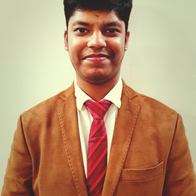

Shubh Garg
Research Scholar, IAIRO (Indian AI Research Organisation), Gandhinagar · with Prof. Amit Sheth
About
My core empirical finding is that evaluation protocol is a first-class variable in AI research: the same model, same layer and same attribute produce structurally different causal conclusions depending solely on how the dataset is constructed.
I pursue this question across four domains — clinical AI (federated retinal grading, strabismus quantification), remote sensing and disaster intelligence (multitemporal segmentation, hazard benchmarking), neurosymbolic and embodied AI (KG-grounded embodied QA agents, drug repurposing), and representation reliability (probe task sensitivity, CLIP concept stability).
B.E. in Electronics and Computer Engineering, Thapar Institute of Engineering and Technology (CGPA 8.67/10, 2026).
Highlights
- 2026Answering Without Arriving: An Evidence Audit for Embodied Question Answering accepted as a poster at the NeurIPS 2026 NeMo Workshop (avg. rating 7.0/10).
- 2026Do Embodied VLMs Actually Use Their Scene-Graph Memory? accepted at the CoRL 2026 SISREN Workshop.
- Oct 2026Preprint with Chen Shani: When VLMs Destroy What They Know: Spatial Representations Fall Below Lexical Priors (arXiv:2610.13910).
- Aug 2026Joined IAIRO, Gandhinagar, as a Research Scholar.
- 2026Invited student speaker, Global Resilience Summit 2026 (UCCS) / HealersHarbor International Conference.
- 2025StrabNet-CQ published in BMC Ophthalmology; two patents granted on strabismus detection and AI-assisted optical glass design.
Selected research
NaviGraph: Embodied QA via Global Semantic Graph Grounding
Standard embodied QA agents reach 0% closed-loop navigation success, with a 29.6-point gap between oracle navigation (48.2% QA accuracy) and current agents (18.6%). Extended with knowledge-graph memory for long-horizon EQA.
Concept Stability in Vision-Language Models
500 perturbation triplets on CLIP ViT-B/32. After a spatial-relation flip the image encoder actively prefers the incorrect caption (p < 0.0001); colour only enters the representation at layers 11–12.
Probe Task Sensitivity as a Causal Reliability Diagnostic
Label imbalance produces saturation artifacts across Qwen and Mistral for age, education, gender and emotion; balanced evaluation recovers model-specific causal geometry.
Federated Retinal Foundation Models
First benchmark of federated DR grading with a retinal foundation model across populations in Brazil, India and the UAE. FedAvg degrades QWK 0.835 → 0.586; post-aggregation personalised fine-tuning closes 90% of the gap without sharing data.
DAFSeg: Dual-Stream Adaptive Fusion for Disaster Segmentation
63.17% mIoU, 93.85% OA and 56.40% Destroyed-class IoU on BRIGHT. A 14-event ablation shows adaptive selection is not distinguishable from fixed fusion — the evaluation was the finding.
CrisisMMD-Seg & UniCrisisNet
Pixel-level annotations for five hazard categories extending CrisisMMD — the first ground-level disaster segmentation benchmark with structured hazard labels. 88.1% severity accuracy; 51.9% mIoU with a Hazard Interaction Module.
Geometry Without Structure
Systematic characterisation of biomedical LM geometry against molecular similarity: cross-family cosine similarity of 0.02 on identical inputs; DDI F1 +14.2pp over frozen baselines.
TIDIER: Knowledge-Guided Text-to-Image Safety
Training-free safety via a Semantic Safety Margin over a multimodal knowledge graph: ~65% fewer harmful outputs across four benchmarks with a +9–10% relative CLIP score gain.
Intermediate DR Grading (ONCL + CMAW)
Ordinal neighbour contrastive learning with confusion-matrix adaptive weighting over 21,803 fundus images from three device types; Severe NPDR F1 improved up to 15.7pp over cross-entropy.
Publications & patents
Preprint
- Garg S, Shani C. When VLMs Destroy What They Know: Spatial Representations Fall Below Lexical Priors. arXiv:2610.13910, Oct 2026.
Journal articles & book chapters
- Garg S, Sachdeva A, Veer Singh K, Jindal N, Kumar M, Singh M. Machine learning techniques for electric vehicles battery charging: a decade of revolutionary progress (2015–2025). Ionics, Springer Nature, 2026, 1–22.
- Garg S, Sunkarapalli A, Ghosh D, Kaur S, Sukhija J. StrabNet-CQ: an integrated deep learning framework for automated strabismus classification and quantification using ocular landmark detection. BMC Ophthalmology 25(1):595, 2025.
- Garg S, Parakh R, Khandelwal J, Dhasaratahan C, Jindal N. Deep Learning–Based Stratification of Iron Overload in Thalassemia Patients. In Artificial Intelligence for Predictive Healthcare, Auerbach (Taylor & Francis), 2026, 119–137.
Conference & workshop papers
- Garg S, Pandey D, Rawal N, Khandelwal V, Sheth A. Answering Without Arriving: An Evidence Audit for Embodied Question Answering. NeurIPS 2026 Workshop on Neuro-Symbolic Embodied Intelligence (NeMo). Poster.
- Garg S et al. Do Embodied VLMs Actually Use Their Scene-Graph Memory? CoRL 2026 Workshop on Scene and Situation Representations for Embodied Navigation (SISREN).
- Osho O, Garg S, Chakraborty S, Das SK. PCIAFL: Personalized and Class Imbalance-Aware Federated Learning for Driver Behavior Classification. ICDCN 2026, 128–132.
- Kaler P, Garg S, Jindal N. Beyond Peaks: Deep Temporal Models for Ocular Electrophysiology. ICICC 2026, Springer, 132–140.
- Garg S, Kaler P, Samiksha S, Jindal N. AttentiveHybridNet: A CNN-Transformer Architecture with Cross-Attention for Robust Brain Tumor Classification from MRI Scans. IEEE AI Summit 2025, 874–879.
- Garg S, Singh N, Kaler P, Jindal N. AutoML-Enhanced Smart Grid Energy Forecasting for IoT-Enabled Homes. IEEE INSPECT 2025, 1–6.
- Garg P, Gupta B, Garg S, Jindal N, Mandia S, Singh K. A Scalable Ensemble Framework for Robust Image Steganography and Data Restoration Under Distortion Attacks. IEEE INSPECT 2025, 1–6.
- Garg S, Singh N, Jindal N, Singh M. SEFO-GB: Smart Energy Forecasting and Optimization for Green Buildings. IEEE SEFET 2025, 1–7.
- Gupta B, Arora M, Garg S, Ghosh D. Enhancing Strabismus Diagnosis from Detection to Classification with Deep Learning. IEEE AIMLA 2025, 1–6.
Under review
- Garg S, Pandey D, Khandelwal V, Rawal N, Sheth A. Room to Remember: Knowledge-Graph Memory for Long-Horizon Embodied Question Answering.
- Kaippilly Mana RP, Pawar AP, Shyalika C, Garimella R, Garg S, Sheth A. TIDIER: Text-to-Image Alignment via Knowledge-Guided Hate Detection, Interpretation, and Repair.
- Garg S. Federated Retinal Foundation Models: Cross-Population DR Grading Benchmark.
- Garg S et al. Geometry Without Structure: Biomedical LM Embedding Geometry.
- Garg S et al. Intermediate DR Grading via ONCL+CMAW.
- Garg S et al. The Cognitive Capability Spectrum of AI in Medicine.
- Garg S et al. DAFSeg: Dual-Stream Adaptive Fusion for Multitemporal Disaster Segmentation.
- Garg S et al. UniCrisisNet: Multimodal Severity Estimation and Hazard Segmentation.
Patents
- A Method for Detection and Quantification of Strabismus Using Deep Learning Tools. Patent No. 202511042181, 2025. Granted
- A Novel AI-Assisted Framework for Smart Optical Glass Development. Patent No. 202511051934, 2025. Granted
- A Portable Histopathology Device, System and Method. Application No. 202511127973. Filed
Experience
- Aug 2026 – present
Research Scholar — Neurosymbolic AI and Drug Repurposing
IAIRO (Indian AI Research Organisation), Gandhinagar · Prof. Amit Sheth- Extending a Hetionet KG-LLM drug repurposing pipeline to find novel compound–disease associations with mechanistic provenance (prior pipeline: 96% recall on known associations).
- Embodied AI and knowledge-graph research combining formal KG representations with large LLMs for verifiable, grounded AI.
- Mar 2026 – Jul 2026
Research Intern — LLM Alignment, Embodied AI and Knowledge Graphs
AIISC, University of South Carolina · Prof. Amit Sheth- Neurosymbolic KG-LLM pipeline on Hetionet: 96% recall on known compound–disease associations vs. a 30% ceiling in prior work.
- KG-grounded embodied QA agent (AI2-THOR / ProcTHOR) with a global semantic graph and cross-attention between Qwen3-VL and graph embeddings.
- Contributor to TIDIER, a training-free text-to-image safety framework.
- Jan 2026 – present
Research Intern — Clinical NLP and Algorithmic Fairness
Project ANA (Anorexia in Men Research Initiative)- BERTopic pipeline to detect systematic gender bias in eating-disorder screening instruments, with clinician-facing reliability recommendations.
- Feb 2024 – Jun 2026
Undergraduate Research Assistant — Clinical AI and Medical Imaging
Thapar Institute · Dr. Debabrata Ghosh and Dr. Neeru Jindal- StrabNet-CQ: strabismus classification and continuous prism-diopter quantification (Pearson r = 0.730 vs. clinical gold standard); published in BMC Ophthalmology, 2 patents granted.
- AttentiveHybridNet for brain-tumour MRI classification (IEEE AI Summit 2025).
- Thalassemia iron-overload stratification (AUC 0.83) with sub-second ARM inference for rural screening.
- May 2025 – Jun 2025
Research Intern — Federated Learning Under Distribution Shift
Ubisys Lab, IIT Jodhpur · Dr. Suchetana Chakraborty- Personalised CNN-LSTM with temporal attention: +18% minority-class F1 under non-IID federated settings; 60% lower communication overhead via selective aggregation.
- Jan 2025 – May 2025
AI Research Intern — Probabilistic Forecasting and Optimization
Indian Institute of Management Udaipur · Dr. Sumit Kumar- Bayesian state-space and Kalman-filter models with calibrated uncertainty under sparse, irregular observations.
- Oct 2024 – Mar 2025
Research Intern — Multimodal Robustness Evaluation
Samsung R&D Institute (Samsung PRISM)- Multimodal watermark detection at 91% accuracy under perturbation and compression shifts; quantised transformer inference for low-resource deployment.
Education
- Oct 2022 – Jun 2026
B.E. in Electronics and Computer Engineering
Thapar Institute of Engineering and Technology, Patiala- CGPA 8.67/10 · Merit Scholarship (Rs. 1,41,000)
- Coursework: Deep Learning and Applications, Artificial Intelligence, Optimization Techniques, Numerical Analysis, Data Structures and Algorithms
Talks & honours
- 2026Invited student speaker, Global Resilience Summit 2026 (University of Colorado Colorado Springs) / HealersHarbor International Conference — decision-aware AI in healthcare: uncertainty, population-scale deployment and interpretability under distribution shift.
- 2026NeMo Workshop at NeurIPS 2026 — average review score 7.0/10.
- 2022Merit Scholarship, Thapar Institute — Rs. 1,41,000.
- —Ranked 67th of 500+ teams, NKSr Hackathon.
Skills
- Clinical & healthcare AI
- Medical imaging (Grad-CAM, UMAP, segmentation), clinical NLP (BERTopic, BioBERT/SciBERT), federated learning, ARM edge inference, fairness evaluation
- Neurosymbolic & embodied AI
- KG construction (Hetionet, MMKG, semantic scene graphs), KG-LLM cross-attention, EQA agents (AI2-THOR/ProcTHOR), drug repurposing, FAISS, RAG
- AI safety & evaluation
- Activation steering, linear probing, causal intervention, probe task design, counterfactual evaluation, distribution-shift analysis, hallucination detection
- LLMs & alignment
- HuggingFace Transformers, LoRA/PEFT, constrained decoding, Qwen3-VL
- Remote sensing & disaster
- Multitemporal segmentation, change detection, BRIGHT, CrisisMMD, DeepLabV3, SegFormer
- Multimodal & vision
- CLIP, ViT, multimodal fusion, contrastive learning, text-to-image safety
- Systems
- PyTorch, TensorFlow, scikit-learn, FastAPI, Docker, AWS/GCP, Weights & Biases, exo distributed inference (contributor)
- Languages
- Python, C++, SQL, LaTeX